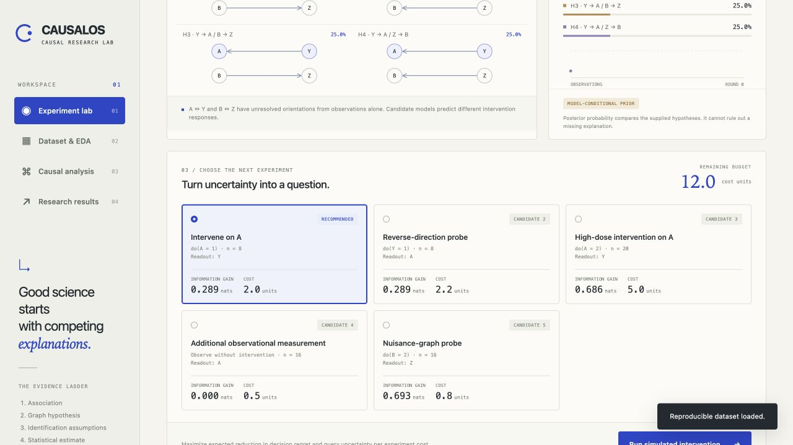
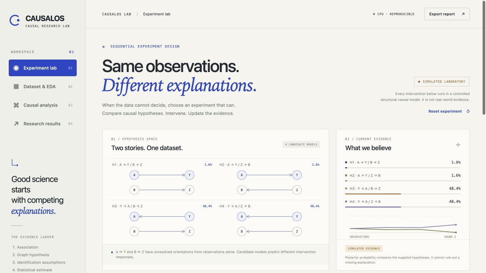

When the data cannot decide, choose an experiment that can.

Query information value, weighed against experiment cost.

Nuisance-graph orientation remains unresolved.
Conditional on this finite model family. Not real-world verification.
Open source · Local research · Reproducible